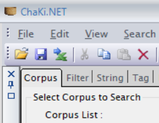
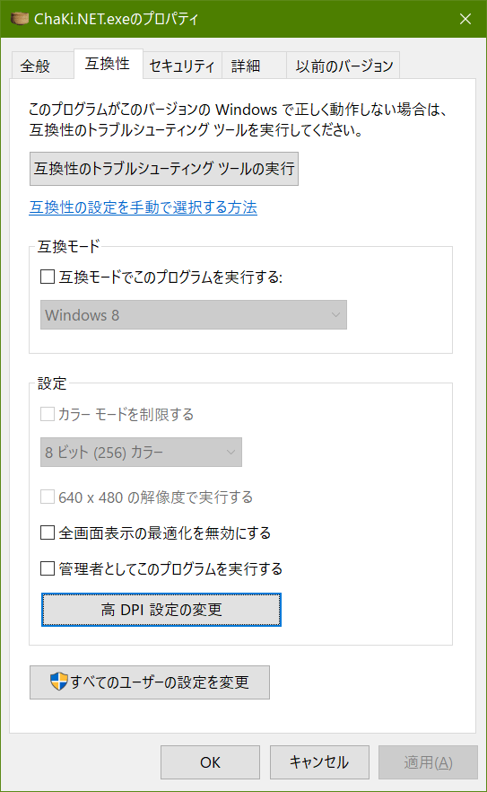
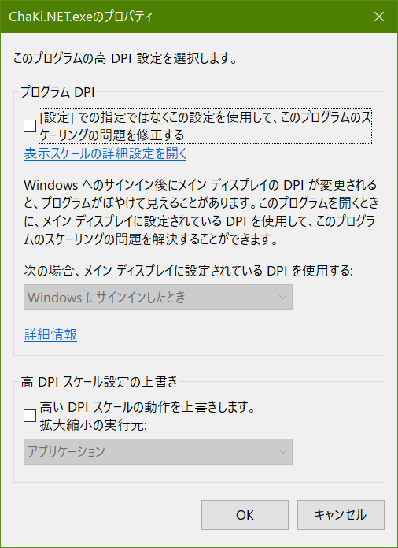

いわゆるhigh-pi環境（高解像度ディスプレイ、特にデスクトップの拡大率が100%よりも大きく設定されている場合）では、さまざまな表示上の問題が起きます。 ここではhigh-piでの代表的な問題について対応方法を説明します。
アプリケーションの文字がぼやける場合
ChaKi.NETはhigh-dpiでの文字表示に対応していますが、環境によっては下図のように文字がぼやけることがあります。 
この場合は、Windows Explorerで - ChaKi.NETがインストールされているフォルダ（デフォルトでは、c:\program files\naist\chaki.net\）に移動 - "ChaKi.NET.exe"の項目上でマウスを右クリックしてコンテキストメニューを表示 - "プロパティ"を選択実行 - "互換性"タブを選択 以上の操作により下のダイアログが表示されます。

「設定」グループ中の、「高DPI設定の変更」ボタンをクリックします。 さらに下のダイアログが表示されますので、「高DPIスケール設定の上書きします」チェックボックスを クリアするか、または、チェックを入れた上で「拡大縮小の実行元:」選択肢から、「アプリケーション」を選びます。 （いずれか効果のある方を選択）

その後OKボタンを押してアプリケーションのプロパティを確定したのち、アプリケーションを起動し、文字表示がシャープになっていれば成功です。
ツールバーのアイコンボタンが小さくなって押しにくい場合
ChaKi.NETのアイコンなどのビットマップは、かなり小さいサイズでデザインされており、高解像度ディスプレイで拡大率を100%などのままにしていると、 識別が難しいほど相対的に小さく表示されてしまいます。この場合は、
上と同じ「高DPI設定の変更」ダイアログにおいて、 「高DPIスケール設定の上書きします」チェックボックスにチェックを入れた上で「拡大縮小の実行元:」選択肢から、 「システム」または「システム（拡張）」を選びます。（いずれか効果のある方を選択）
その後OKボタンを押してアプリケーションのプロパティを確定したのち、アプリケーションを起動し、アイコンが通常の大きさで表示されていれば成功です。